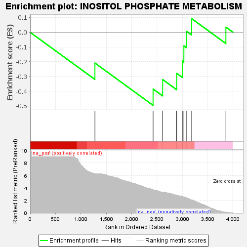
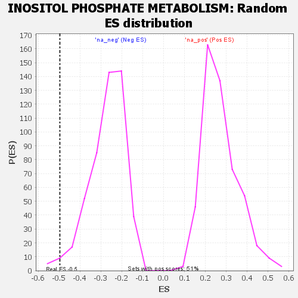

| | | Dataset | GSEA RNK clr Maaslin2 MucosalvsLuminal KO - Duodenum.rnk |
| Phenotype | NoPhenotypeAvailable |
| Upregulated in class | na_neg |
| GeneSet | INOSITOL PHOSPHATE METABOLISM |
| Enrichment Score (ES) | -0.49621087 |
| Normalized Enrichment Score (NES) | -1.8350798 |
| Nominal p-value | 0.018218623 |
| FDR q-value | 0.0558158 |
| FWER p-Value | 0.523 |
Table: GSEA Results Summary

Fig 1: Enrichment plot: INOSITOL PHOSPHATE METABOLISM
Profile of the Running ES Score & Positions of GeneSet Members on the Rank Ordered List

Fig 2: INOSITOL PHOSPHATE METABOLISM: Random ES distribution
Gene set null distribution of ES for INOSITOL PHOSPHATE METABOLISM